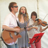
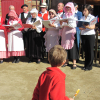

|
 |  |
|
Jèrriais |
Angliais |
|
chanter |
to sing |
|
eune chanson |
song |
|
eune chant'rêsse |
singer (f) |
|
eune chifournie |
hurdy-gurdy |
|
eune polka |
polka |
|
eune valse |
waltz |
|
jouer un înstrument |
to play an instrument |
|
la bâsse dé viole |
cello |
|
la bâsse |
bass |
|
la bèrcheuse |
lullaby |
|
la chant'tie |
singing |
|
la clairinnette |
clarinet |
|
la dgitare |
guitar |
|
la fliûte |
flute |
|
la harmonie |
harmony |
|
la harpe |
harp |
|
la mélodie |
melody |
|
la musique |
music, band |
|
la note |
tune |
|
la pouque à vent |
bagpipe |
|
la s'gonde |
contralto |
|
la trompette |
trumpet |
|
lé chef dé musique |
conductor |
|
lé solo |
solo |
|
lé soprano |
soprano |
|
lé tambour |
drum |
|
lé tchoeu |
choir |
|
l'èrfrain |
chorus |
|
l'organiste |
organist |
|
l'orgue |
organ |
|
sonner |
to play an instrument |
|
trompettes, pipes et cordes |
brass, wind and strings |
|
un accordéon |
accordion |
|
un artchet |
violin bow |
|
un basson |
bassoon |
|
un cantique d'Noué |
Christmas carol |
|
un cantique |
hymn |
|
un chant |
song |
|
un chanteux |
singer (m) |
|
un harmonium |
hamonium |
|
un ménuet |
minuet |
|
un musicien |
musician |
|
un orchestre |
orchestra |
|
un pianiste |
pianist |
|
un piano |
piano |
|
un trio |
trio |
|
un trompetteux |
trumpeter |
|
un violon |
violin |
|
un violonniste |
violinist |
|
beustchi |
to busk |
|
la beusquéthie |
busking |
|
la sŷmphonnie |
symphony |
|
sŷmphonnique |
symphonic |
|
l'orchestre sŷmphonnique |
symphony orchestra |
Viyiz étout: